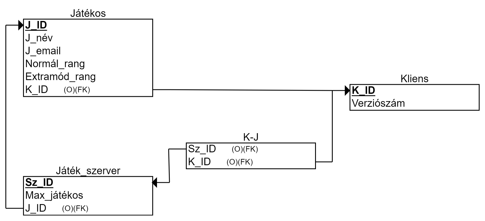

Az SQLite egy könnyű súlyú, relációs adatbázis-kezelő rendszer, amelyet a Java programozási nyelvhez is használhatunk. Az SQLite használata során az adatokat fájlban tároljuk, és a rendszer nem igényel külön szerveralkalmazást. Az SQLite használata során az adatbázis-kezelő rendszerrel való kapcsolatot JDBC segítségével hozzuk létre.
Az SQLite az úgynevezett klasszikus szervernélküli adatbázis-kezelő rendszerek közé tartozik, amely azt jelenti, hogy az adatbázis motor ugyanazon processzuson, szálon és címen fut, mint az alkalmazás. Az SQLite-ban minden adatbázishoz egyetlen adatbázisfájl tartozik, amely platform-függetlenné teszi az adatbázist. Az SQLite önálló, kis méretű (kb. 500 KiB), C forrású programkönyvtárként (library) megvalósított ACID-kompatibilis relációs adatbázis-kezelő rendszer, illetve adatbázismotor. A kliens-szerver architektúrájú adatbázis-kezelő rendszerekkel ellentétben az SQLite motor nem egy különálló folyamat, amellyel a program kommunikál, hanem a program részét alkotja, ahhoz hozzálinkelt programkönyvtár lévén. Dinamikusan is meghívható.
Az SQLite megvalósítja az SQL-92 szabvány nagy részét, így pl. részlegesen támogatja a triggereket és a legtöbb komplex / összetett lekérdezést, de a referenciális integritási kényszerek használatát csak a 3.6.19 verziótól kezdődően támogatja. Az SQLite nem alkalmazza a hagyományos SQL rendszerekben megszokott szigorú mezőtípus-kezelést: egy adattípus nem egy tábla oszlopaihoz, hanem az egyedi értékekhez van hozzárendelve, más szóval dinamikus típuskezelést használ. Emellett a Perlre emlékeztető gyengén típusos adatkezelés található benne: a mezőknek típus helyett affinitásuk (preferált típus) van. Például string típusú adat beilleszthető integer affinitású oszlopba; ha az SQLite sikeresen tudja konvertálni integerré, akkor úgy tárolja, egyébként meghagyja az adat eredeti típusát.
Az SQLite-ot kis erőforrásigényű rendszernek tervezték. A lefordított bináris könyvtár mérete (megfelelő paraméterezéssel) 500KiB alá is szorítható, annak ellenére, hogy a kód különböző architektúrák széles skáláján lefordítható.
az egyedekből táblák lesznek
az egyedekhez kapcsolódó tulajdonságokkal fel kell tölteni a táblákat a következő módon
a Primary Key, a szimpla, az egyedi és az opcionális
tulajdonságok ugyanolyan formátumban átkerülnek (az adott
jelölésekkel)
a többértékű tulajdonságot úgy írjuk át, hogy a többértékű tulajdonságból leágazó tulajdonságokat visszük csak át
a származtatott tulajdonságok relációs modellben nem jelennek meg
a kapcsolatok a következőképpen lesznek megvalósítva
1.1 kapcsolat esetén az egyik oldalra bekerül egy Foreign Key nevű tulajdonság, ami a másik tábla Primary Key-ére mutat
1.N kapcsolatnál ez a Foreign Key szigorúan az N-es oldalra kerül
N.M kapcsolat esetén egy külön kapcsolótábla jön létre, amely a két Foreign Key-t tartalmazza
kötelező kapcsolatot a NOT NULL jelzővel jelöljük az adott oldalon, ahol ez nincs jelölve, az a kapcsolat nem kötelező
Ezek alapján a 3.2.
pontban bemutatott ER modell relációs formában a következőképpen
néz ki:
